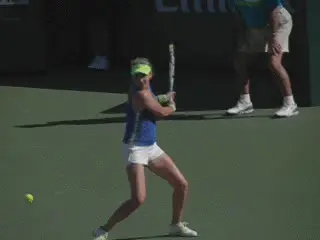
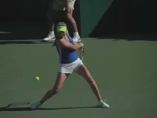
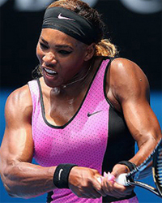
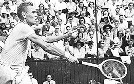
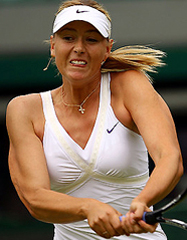
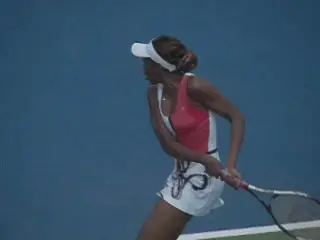
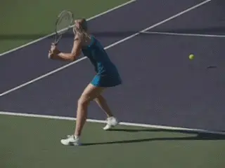

Backhand Stances: Pro Women
Comprehensive unified tennis knowledge base — Fundamentals, Stroke Analysis, Reference Library, and more
Backhand Stances: Pro Women
John Yandell

Are pro women's backhand stances fundamentally different from the men?
In the last two articles we've looked at the surprising predominance of closed stances on the men's pro backhand, both for the two hander (Click Here) and for the one hander (Click Here). But what about the women?
Unlike the men, almost all of the top women hit with two-hands. So are the stance choices similar to the two-handed men? No. The women's stances are actually different and more varied. Open stance is the most common choice for most women players, or to be accurate, semi open stance, similar to the dominant stance on the forehand. This means the front foot is closer to the net than the rear and offset at about a 30 to 45 degree angle from the rear foot. (Click Here.)
Some players use the semi-open more predominantly or even exclusively. Venus Williams for example hits virtually all her backhands semi-open and hits many that are from a fully open stance or something close.
After the open stance, the second most prevalent choice is neutral or square stance. This means the player is stepping forward so a line across the toes is basically parallel to the target line.

The semi-open stance alignment with a line across the toes at an angle of 30 degrees to 45 degrees with the baseline.
Closed stance is the first choice on the men's side. But for the women closed stance is a distant third. And when the women players do hit closed, the step across is usually shorter, at a less severe angle, and the knee bend not as deep.
Here are some numbers to show this. Looking at over two hundred backhands from top women's players where they appear to have the ability to choose the stance option, about 45 percent of the stances were open. About 40 percent were neutral. 15 percent or less of the stances were closed.
And, again when women do use closed stances, they tend to be less severe than in the men's game. The primary use appears to be on balls that are shorter and lower.
How to account for these variations? There are at least two factors to consider. Grip and hitting arm structure.

Closed stance is far less frequent, and usually less extreme.
When it comes to the grip, virtually all men shift to some version of a continental grip with the bottom hand. The basic flaw in Andy Roddick's backhand was that he did not. (Click Here.) Most of the women do something similar.
Why?
But two of the greatest women's players of all time, Venus and Serena Williams don't. Although they do change grips with the bottom hand, neither rotates the hand far enough toward the top of the handle to be considered a mild backhand grip or even some version of a continental.
Their index knuckles hover around bevel two. But it's questionable whether the heel pad of the racket hand ever creases the top bevel, particularly with Venus.
This bottom hand grip is actually similar to the old style eastern forehands of players like Don Budge and Jack Kramer. This is with both the index knuckle and the heel pad predominantly on bevel two.
What about the grip with the top hand? For both Venus and Serena, the top hand is in a mild semi-western . The heel pad is basically behind the handle and the index knuckle is shifted down one bevel. This corresponds to a 4/3 grip in Tennisplayer terminology. (Click Here.)


Neither Venus or Serena has a true backhand grip with the bottom hand.
This grip combination--a weak bottom hand and a semi-western top hand--has a fundamental effect on the stroke mechanics. Both Serena and Venus's backhands are much more left side or left arm dominant than backhands that have a stronger grip with the bottom hand.

Kramer's forehand grip with the index knuckle visible on Bevel 2.
They are more similar to left handed forehands and make less use of the front arm. This is directly related to the preference for semi-open stances.
Virtually all the other top women hit with grip structures similar to the men. This means the grip with the bottom hand shifts into some version of a continental or mild backhand.
This can be combined with an eastern grip which places the palm more completely behind the handle. Or a grip with the index knuckle shifted downward in the same direction as Venus and Serena.
These women hit a higher percentage of open stance backhands than the men, but also hit more backhands neutral and closed in comparison to the Williams sisters.

Serena hits predominantly semi-open. For Venus some version of open stance is virtually exclusive.
But why do they hit neutral stance more, rather than closed stance like the men, and why are the closed stances less extreme? These brings us to our second key factor: the hitting arms.
For the men the most common hitting arm structure is with the bottom arm bent and the top arm straight. Virtually all the women hit with a double bend.
This means the elbow is bent and pointed in toward the body, and the wrist is laid back. As the swing starts forward, this structure is maintained at the contact and out into the followthrough.
For Venus and Serena there is less pull at the start of the stroke with the front arm due to the weaker bottom hand grip. This also means the left, rear arm is pushing more, sooner.


Most women rotate the bottom hand more toward the top of the frame in comparison with the Williams sisters.
In the extreme version like Venus this can also mean greater body rotation in the forward swing, typically with a more open stance. On these balls Venus finishes with the rear shoulder pointing at least partially toward the opponent, similar to the modern forehand.

Venus often rotates the torso further through the back with a more fully open stance.
However the double bend structure also has an impact on the women who change the grip more than Serena or Venus. When the men straighten out the rear arm they push the contact point slightly further to their sides and probably slightly more in front as well.
This contact point is probably more conducive to the large diagonal cross step with the bigger turn and deeper knee bend that is associated with the men's closed stance. But this also may be a strength issue for women players.
In any case, the spacing of the double bend structure makes the open stance more natural for the women. It also restricts the ability of women players to cross step since it keeps the hands and racket closer to the body.
The women who do make a grip shift similar to the men are able to use the front arm pull to help initiate the forward. But because both arms are bent and closer to the body, the neutral stance is probably more comfortable than the extreme closed version.
So, clearly, there is more diversity in stances with the top women. But can we honestly saw that one version or the other is superior? As I have said before we can't clone players to teach them two different technical styles and compare.

The contact point with the double bend appears closer to the body than with the straight bent arm alignment of the men.
It would be hard to argue with the Williams sisters results, obviously. Yet other women produce fantastic two handers with different grips and stances.
My own preference would be to start two handers with a grip shift to a mild backhand. But for other players less shift and more left handed, open stance styles may end up being the way to go.
Regardless I think it is important to develop a feel for the semi-open stance set up. This includes the shoulder turn but also the deep coil with the back leg.
I pair that initially with the neutral step forward into square stance. I think this step is important when you are working on fundamentals because it helps players complete and really feel the turn.
From there you can experiment with the closed stance going somewhat further across--or staying with open stance more exclusively. Still the goal is for the player to feel comfortable with all the variations and to be able to move seamlessly from one stance to the next, as appropriate to the ball. More on all this when I get to the two hander in my New Teaching Method series.

Learning neutral stance helps players feel the full turn.
A final important point that we also saw with the men. This is the role of the backfoot, and specifically what it does in the forward swing.
It's been well documented that the backfoot often swings around after the stroke. This is the so called recovery step, so the player can then push off back toward the middle.
But in all three stance variations, the recovery step happens after the completion of the swing, not during. In reality the backfoot actually stays well on the player's right side and often actually kicks backward until the followthrough is wrapping over the shoulder.
This is a key factor in controlling the body rotation and the angle of the torso at contact. As we saw the men, the contact point on virtually all two-handers is with the shoulders still partially closed to the baseline.
This is true even for the extreme women's versions like Venus and Serena. When the players are closer to on the dead run, the recovery step may happen sooner. But emphasizing the conscious swinging of the foot disrupts the natural timing of the basic two-hander and causes the body to rotate too soon.

In all the women's stance variations, the back foot stays behind and kicks back slightly until after the forward swing.
So there is one significant commonality between the men and the women, regardless of stance. As to the differences, the question is whether the women's backhand will move closer technically to the men's with straight rear arms and more closed stances preferences. Only the future of tennis can tell.
Is it important to understand all these variations? Yes. As players and/or coaches if we truly understand the options we can apply them more appropriately in developing the best two hander variation for ourselves or our players.
Obviously players can succeed with very different combinations of technical elements--that's not just on the backhand, it applies to all the strokes. But understanding the range of sound options gives players and coaches greater clarity and greater technical mastery in developing the right combination.

John Yandell is widely acknowledged as one of the leading videographers and students of the modern game of professional tennis. His high speed filming for Advanced Tennis and Tennisplayer have provided new visual resources that have changed the way the game is studied and understood by both players and coaches. He has done personal video analysis for hundreds of high level competitive players, including Justine Henin-Hardenne, Taylor Dent and John McEnroe, among others.
In addition to his role as Editor of Tennisplayer he is the author of the critically acclaimed book Visual Tennis. The John Yandell Tennis School is located in San Francisco, California.
Source: tennisplayer.net archive — John Yandell-Backhand Stances- Pro Women.docx (John Yandell teaching library, 2002-2022). Extracted and rendered as HTML for Tennis Future Lab.